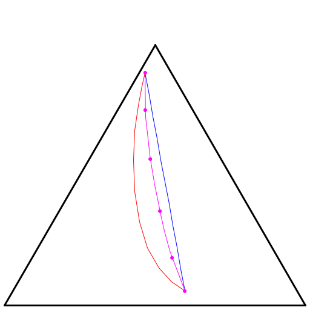
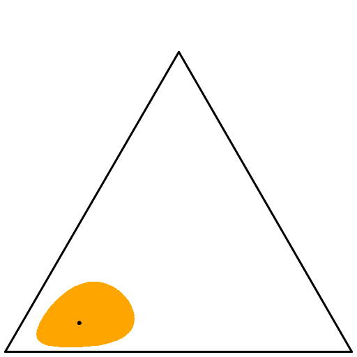
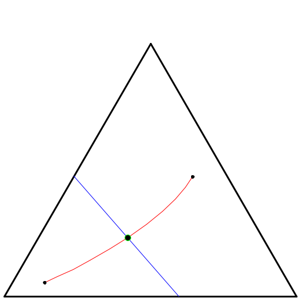
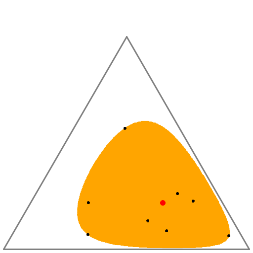
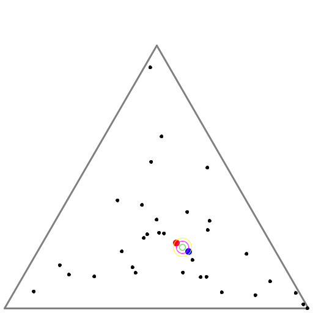
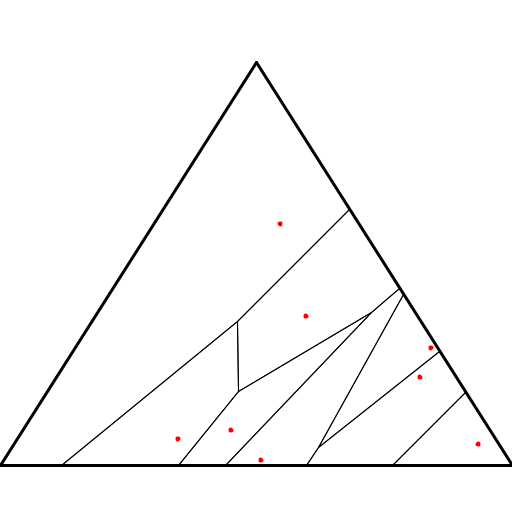
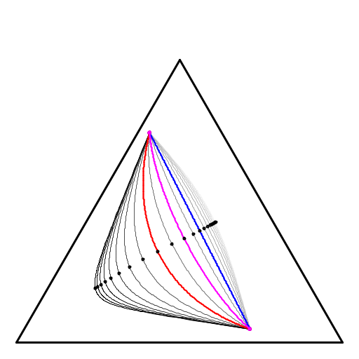

Geodesics: |
 | fig pdf | paper |
| Fisher-Rao ball |  | fig pdf | paper |
Chernoff point/Chernoff information: |
 | fig pdf | paper |
Smallest enclosing Fisher-Rao ball |
 | fig pdf | paper |
Jeffreys centroid: |
 | fig pdf | paper |
Kullback-Leibler affine Voronoi diagram |
 | fig pdf | paper |
alpha-geodesics with midpoints |
 | fig pdf | paper |